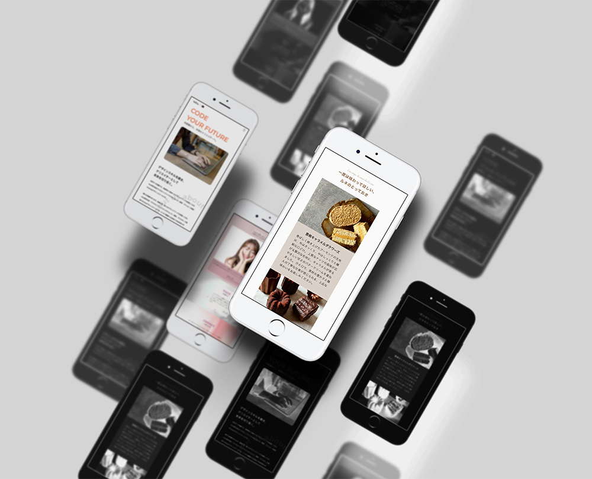
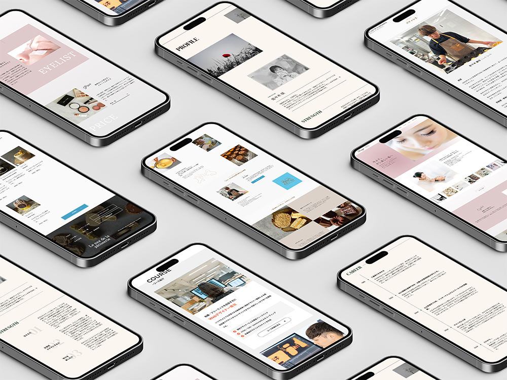
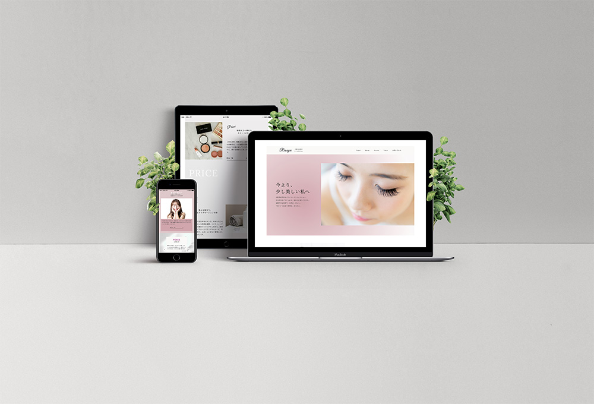
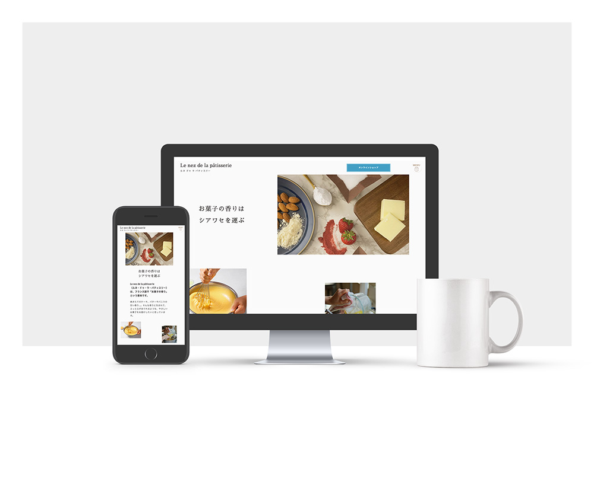
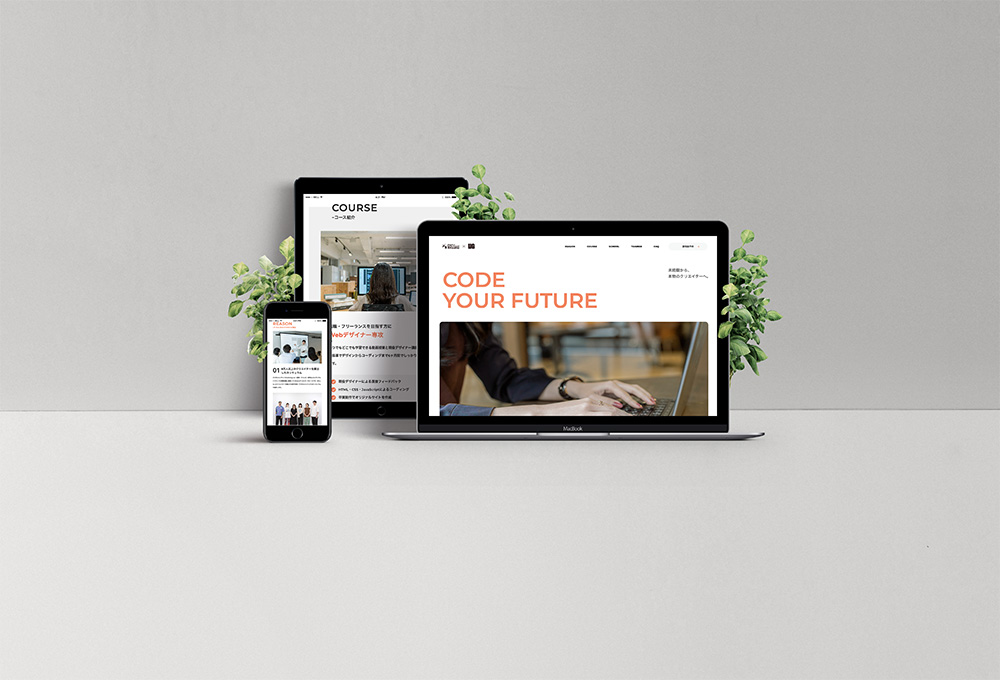

Clarity Sturucture The Human Code
Clarity
Structure
The Human
Centric Code
I love creating things, though my hands aren’t very deft. What I discovered was frontend — a way to “make things” on the web. Enchanted by the joy of weaving design and motion into tangible form, I’ve set foot on this path..
WORKS
-

#自主制作
ヘアオイル
LP
Reactのstorybookを使用して制作しました。
-

#クライアントワーク
Le nez de la patisserie様
コーポレートサイト
洋菓子店の公式サイトをリニューアルする設定で制作しました。匂いを感じることを意識して制作をしました。
-
#自主制作
マツエクサロン Rissyu
-
#自主制作
ポートフォリオ
-

#スクール課題
デジタルハリウッドSTUDIO by LIG
ABOUT
佐々木 咲
SAKI SASAKI
1985年生まれ、大阪在住。保育士として17年勤務してきました。ものづくりが好きで、Webの世界に出会ってからは“つくること”の楽しさを再発見。デザインを学ぶうちに、コードで形をつくるフロントエンドの面白さに惹かれました。今はフロントエンドエンジニアを目指して日々学んでいます。
VIEW MORE